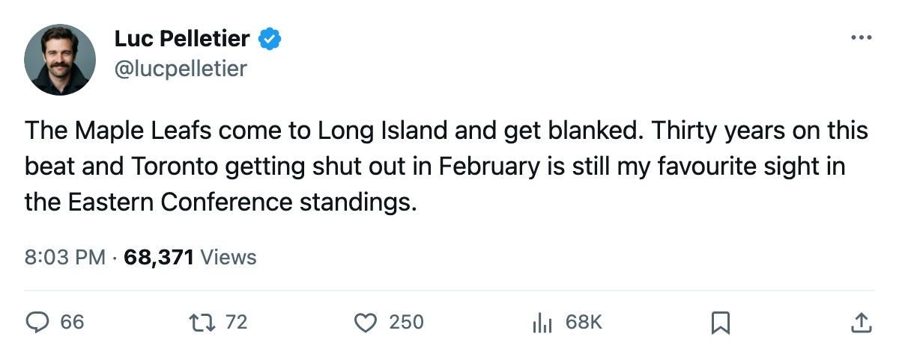

Goalie Watch: DiPietro stops 28 in a shutout of Toronto, and the Islanders hold 8th by 2
New York beat the first-place Maple Leafs 2-0 on 2005-02-25. Buffalo, 2 points back and on a 6-game slide, visits on 2005-03-01.
 Luc PelletierMontreal correspondent · Home Ice Network
Luc PelletierMontreal correspondent · Home Ice Network
The piece
The  New York Islanders beat
New York Islanders beat  Toronto Maple Leafs 2-0 on 2005-02-25 behind
Toronto Maple Leafs 2-0 on 2005-02-25 behind  Rick DiPietro89, who stopped all 28 shots he faced. New York outshot Toronto 33-28 in the win, their 2nd straight after a 3-2 overtime decision over
Rick DiPietro89, who stopped all 28 shots he faced. New York outshot Toronto 33-28 in the win, their 2nd straight after a 3-2 overtime decision over  Boston Bruins on 2005-02-23.
Boston Bruins on 2005-02-23.
That puts the Islanders at 64 points in 62 games, 8th in the Eastern Conference.  Atlanta Thrashers (62 points, 60 games played) and
Atlanta Thrashers (62 points, 60 games played) and  Buffalo Sabres (62 points, 61 games) trail by 2.
Buffalo Sabres (62 points, 61 games) trail by 2.
DiPietro has started 46 of New York's 62 games, a 74% share.  Garth Snow78 has taken the other 23 starts. DiPietro's workload sits behind only
Garth Snow78 has taken the other 23 starts. DiPietro's workload sits behind only  Washington Capitals's
Washington Capitals's  Olaf Kolzig85 (60 starts, 94%) and
Olaf Kolzig85 (60 starts, 94%) and  Detroit Red Wings's
Detroit Red Wings's  Dominik Hasek84 (56 starts, 90%) among starting goaltenders this season.
Dominik Hasek84 (56 starts, 90%) among starting goaltenders this season.
The race for the East's last spot
 New Jersey Devils visits Nassau Coliseum on 2005-02-27. The Devils are 2nd in the East at 85 points, riding a 3-2 overtime win at
New Jersey Devils visits Nassau Coliseum on 2005-02-27. The Devils are 2nd in the East at 85 points, riding a 3-2 overtime win at  Pittsburgh Penguins on 2005-02-23 and carrying the conference's second-best record behind Toronto.
Pittsburgh Penguins on 2005-02-23 and carrying the conference's second-best record behind Toronto.
Then Buffalo Sabres arrives on 2005-03-01. The Sabres are on a 6-game losing streak, outscored 26-21 over their last 10. They sit 2 points behind the Islanders. A regulation win for Buffalo would erase the gap entirely. A regulation win for New York would widen it to 4.
Buffalo's goaltender  Martin Biron87 has started 52 of 61 games (85%), and the Sabres already sat him once this fortnight in favour of
Martin Biron87 has started 52 of 61 games (85%), and the Sabres already sat him once this fortnight in favour of  Ryan Miller80 before returning to him. New York's coach has no such decision to make: DiPietro started both games of the current streak.
Ryan Miller80 before returning to him. New York's coach has no such decision to make: DiPietro started both games of the current streak.
Atlanta has the most runway of any club in the race, with 22 games remaining, the most in the Eastern top 10. The Atlanta Thrashers Thrashers visit  Colorado Avalanche on 2005-02-27 in the first meeting between the two clubs this season.
Colorado Avalanche on 2005-02-27 in the first meeting between the two clubs this season.
The Islanders finish the week at home against  Tampa Bay Lightning on 2005-03-04. Tampa Bay leads the Southeast at 82 points and is 18-13 on the road.
Tampa Bay Lightning on 2005-03-04. Tampa Bay leads the Southeast at 82 points and is 18-13 on the road.
New York has outscored opponents by 14 over 62 games (190 for, 204 against). The 2-0 result against Toronto was the 2nd time in their last 2 games they held an opponent off the scoresheet.
